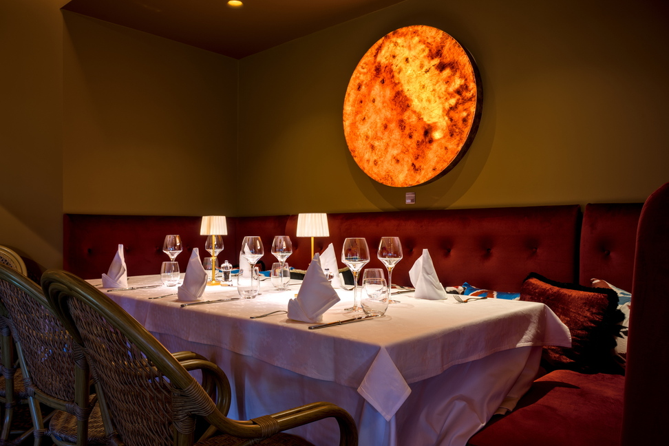
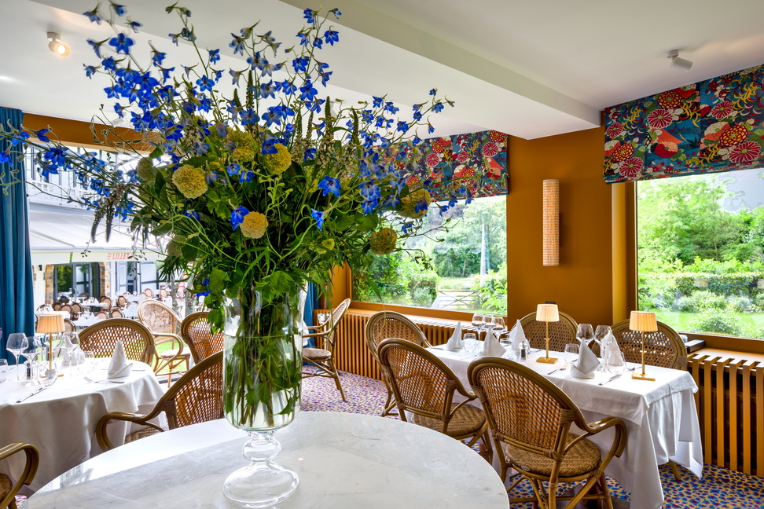

Brasserie chic — Salle de réception à Overijse
L'adresse événementielle entre Bruxelles et les deux Brabant
Mariage, baptême, bar mitzvah, cocktail privé, anniversaire ou événement d'entreprise : Le Barbizon met l'exigence de sa cuisine et l'élégance de son cadre au service de vos réceptions, de 30 à 120 couverts.
Pourquoi choisir Le Barbizon
Un lieu pensé pour recevoir
Cadre lumineux & verdoyant
Terrasse et jardin attenants, lumière naturelle, espace aéré pour des moments de détente en extérieur — entre deux allées d'arbres centenaires.
Expérience clé en main
Accueil attentif, organisation fluide, cuisine généreuse et personnalisable, service adapté à vos besoins — de l'aperitif au dernier verre.
Parking & accessibilité
Parking disponible directement au restaurant, à 25 minutes de Bruxelles et facilement accessible depuis le Brabant flamand et wallon.
Situé à Overijse, Le Barbizon accueille des familles et des entreprises venues de toute la région : Bruxelles (Uccle, Woluwe, Auderghem à 20-25 minutes), le Brabant wallon (Wavre, Waterloo, La Hulpe) et le Brabant flamand (Hoeilaart, Tervuren, Louvain). Un emplacement central pour réunir tous vos invités, quelle que soit leur provenance.
Vos événements
Une formule pour chaque occasion
Mariage
Vin d'honneur au jardin, dîner assis jusqu'à 120 couverts, salon privatisable en cas de pluie. Menu personnalisé avec le chef.
Baptême & communion
Un déjeuner ou goûter convivial en salon privé, avec accès au jardin pour les photos de famille.
Bar & bat mitzvah
Réception adaptée à vos exigences, service traiteur personnalisable selon vos préférences alimentaires.
Cocktail privé ou d'entreprise
Formule debout ou assise, jardin et terrasse pour prolonger la soirée, service traiteur sur mesure.
Anniversaire & fête privée
De la fête intime de 30 personnes à la grande réception, avec accès au jardin, à la terrasse et à la plaine de jeux pour les enfants.
Séminaire & réception d'entreprise
Salle modulable pour réunions, lancements de produit ou repas d'équipe. Parking sur place pour vos invités.
Le lieu
Un jardin, une terrasse, une drève
Sans oublier notre merveilleux jardin et notre terrasse, parfaits pour des déjeuners ensoleillés et de longues soirées d'été pleines de convivialité. La salle de réception s'ouvre directement sur cet espace extérieur, pour des événements qui respirent.
Ici, chacun trouve sa place : les familles sont les bienvenues, les enfants aussi, avec une plaine de jeux accessible de 12h à 18h.
Voir la galerie photosPour les groupes plus restreints
Un salon plus intime


Étape suivante
Demandez votre devis
Décrivez votre projet en deux minutes : nous revenons vers vous sous 48h ouvrées avec une proposition adaptée à votre date et votre nombre d'invités.
Vous préférez appeler ? 02 469 30 83
Questions fréquentes
Tout savoir avant de réserver
Quelle est la capacité de la salle de réception ?
De 30 à 120 couverts selon la configuration retenue, avec accès au jardin et à la terrasse attenants.
Le Barbizon organise-t-il des mariages ?
Oui — vin d'honneur au jardin, dîner assis, salon privatisable en cas de pluie, menu personnalisé avec le chef.
Peut-on organiser un baptême, une communion ou une bar mitzvah ?
Oui, la salle s'adapte à ces célébrations familiales, avec un traiteur personnalisable selon vos traditions et préférences.
Peut-on louer la salle pour un séminaire ou un cocktail d'entreprise ?
Oui, avec un traiteur personnalisable et un parking sur place pour vos invités.
Le Barbizon est-il accessible depuis Bruxelles et le Brabant ?
Oui, à environ 25 minutes de Bruxelles, et à proximité du Brabant wallon (Wavre, Waterloo) et du Brabant flamand (Hoeilaart, Tervuren, Louvain).
Sous combien de temps recevoir un devis ?
L'équipe revient vers chaque demande sous 48 heures ouvrées.